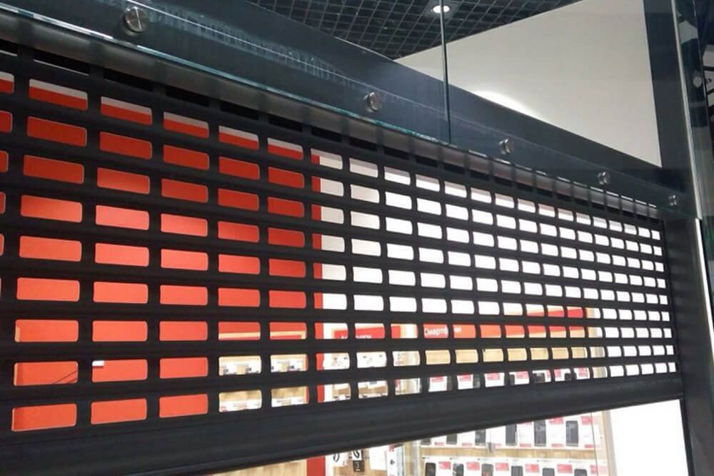
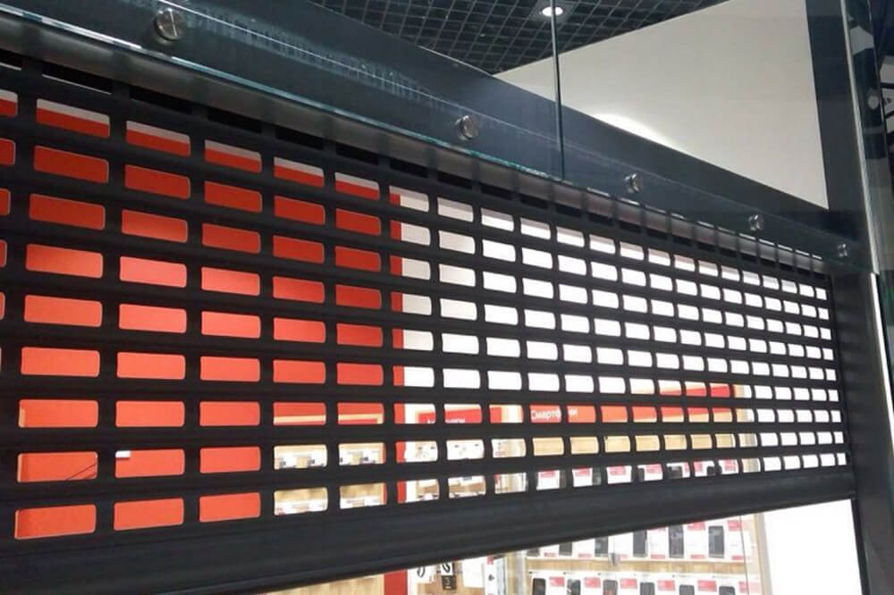

РЕМОНТ ВОРОТ, ЗАЩИТНЫХ РОЛЕТ, ШЛАГБАУМОВ, МАРКИЗ
Оперативно. Киев и Киевская область

Профессиональный ремонт всех типов и любой сложности ворот, ролет, шлагбаумов, маркиз. Аварийное открытие и закрытие ролет. Ремонт и настройка автоматики. Экстренный выезд после поступления заявки. Изготовление ролет и ворот в короткие сроки.

 

ДЕТАЛЬНЕЕ ОБ
УСЛУГЕ
- — Аварийный ремонт ворот всех типов и конструкций: секционных, откатных, распашных, роллетных, щитовых.
- — Срочный ремонт защитных ролет
- — Ремонт автоматики
- — Прошивка и настройка автоматики
- — Ремонт и прошивка брелков, радиопультов, радиомодулей
- — Продажа новых комплектов автоматики
- — Монтаж/демонтаж ролет, ворот
- — Замена изношенных узлов и деталей (пружин, тросов, роликов, направляющих, замков, ламелей, кассет, шнура, двигателей и т.д.)
- — Изготовление торсионных пружин для секционных ворот
- — Ремонт полотна ролет с переборкой
- — Регулировка двигателя (концевиков)
- — Автоматизация защитных ролет, ворот, установка электроприводов (моторов)
- — Дополнительная установка радиоуправления для существующих двигателей
- — Диагностика поломок и сервисное обслуживание
- — Изготовление ворот и защитных ролет под ключ с монтажем в короткие сроки
НАШИ
ПРЕИМУЩЕСТВА
- — Сервис 24/7 – работаем без выходных и праздничных дней;
- — Оперативный выезд;
- — Экстренное открытие и закрытие ворот, роллет, шлагбаумов, маркиз;
- — Работы выполняются в течение одного дня;
- — Квалифицированные мастера с 15-ти летним опытом;
- — Гарантия на новую автоматику 12 месяцев;
- — Гарантийное и после гарантийное обслуживание.
Чтобы узнать цену вашего заказа или получить бесплатную консультацию, нужно позвонить по телефону или
оставить
завку на сайте.
О нас
Компания работает более 10 лет. Ремонтные работы выполняют квалифицированные мастера, имеется необходимое
оборудование, инструмент и запасные части.
Оплата
Производится в наличном и безналичном виде (способ оплаты уточняйте у менеджера)